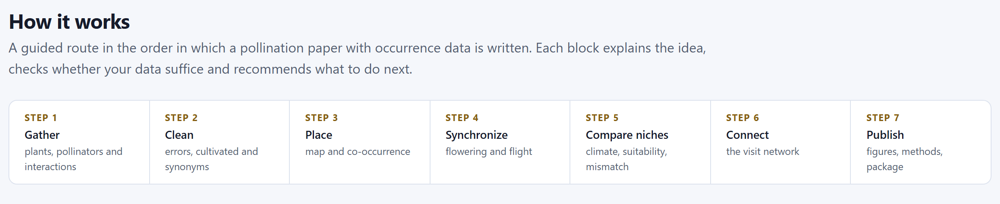
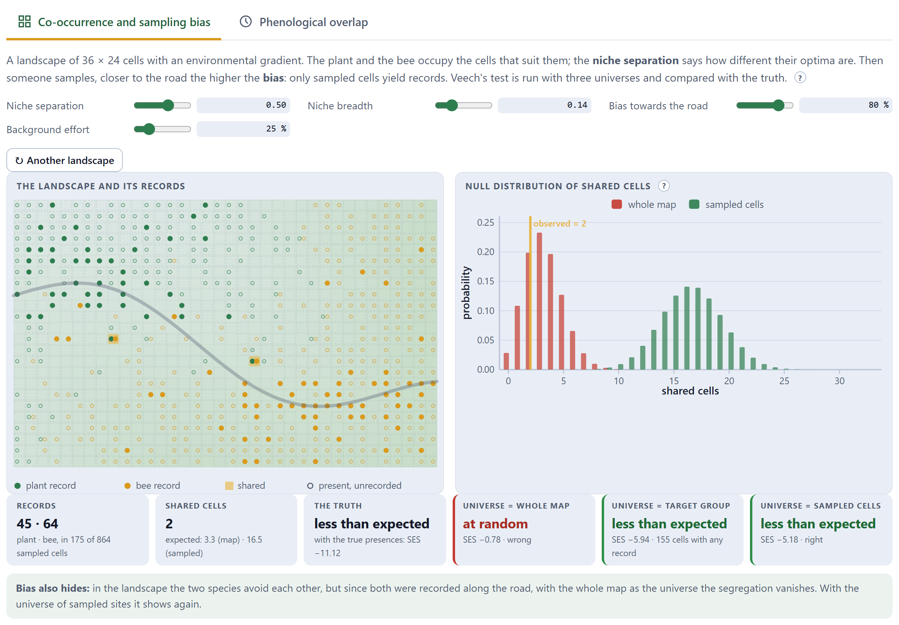
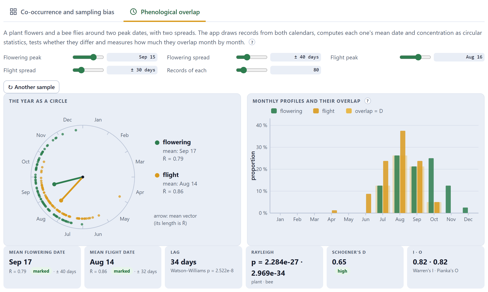
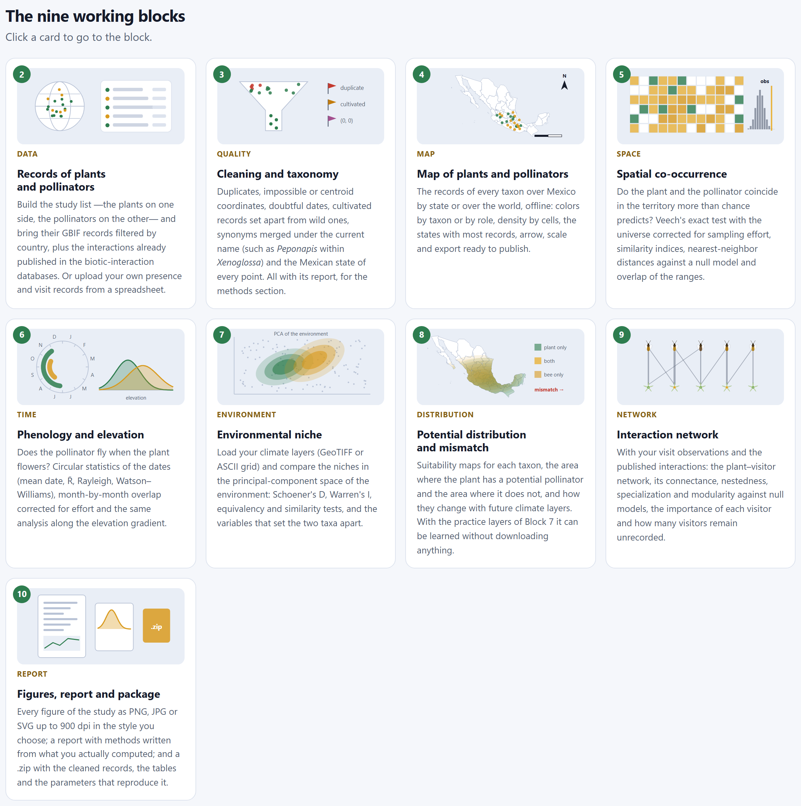
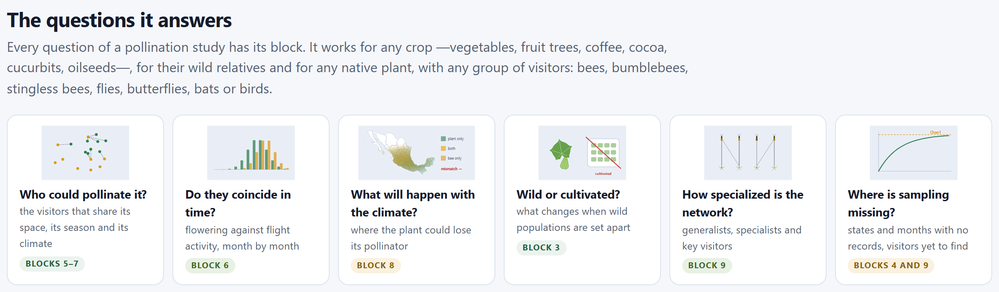
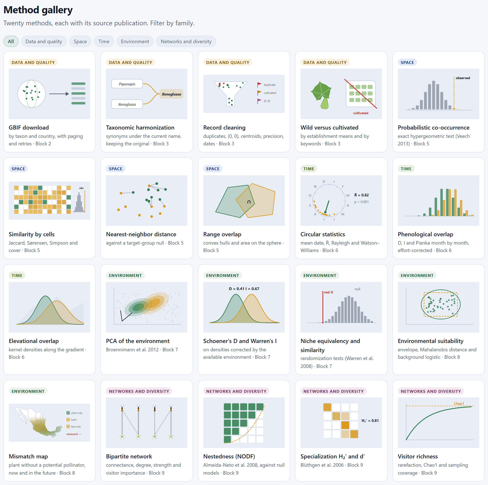
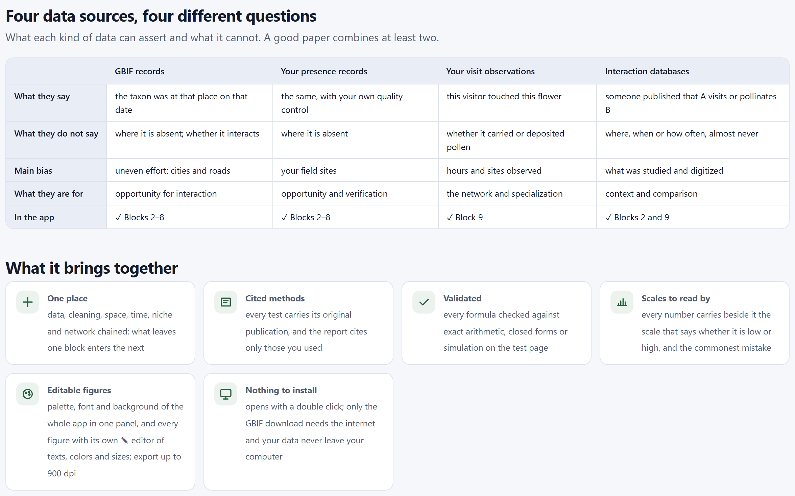
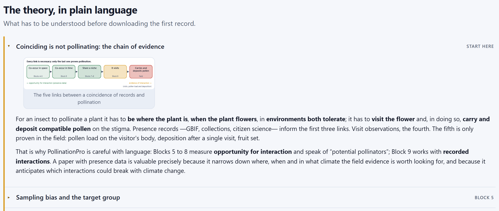
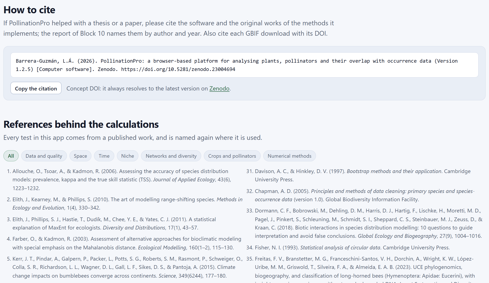

The home page is not a brochure: its two labs generate virtual landscapes and calendars and run on them the same tests the app will run on your records. Since the truth is known in a virtual landscape, you can see when a test is right and when it is wrong. Here you also find the map of the blocks, the questions they answer, the twenty methods with their source publication, what each data source can claim, the theory in plain language and the references.
The first screen (Figure I.2) asks a single question: do the flower and its pollinator meet? Below it, a paragraph sums up the path —from GBIF records and your own observations to a paper— and four buttons lead to the four places where people usually start.
| Button | Where it leads |
|---|---|
| Start with my taxa → | To Block 2, to type the study list. |
| Try the labs | Down to the two labs on this same page (Sections 1.3 and 1.4). |
| Read the theory | Down to “The theory, in plain language”, and opens its first item (Section 1.7). |
| How to cite | Down to the citation of the program (Section 1.8). |
The illustration on the right sums up the app in one picture: a cucurbit vine with flower and fruit, a bee arriving, the map of Mexico with plant and pollinator records, a year clock with flowering and flight, a niche diagram with its D and, at the bottom, a visit network. Its caption says it all: coincidence is the hypothesis; the visit, the evidence. The five badges under the buttons sum up what the program guarantees: it runs entirely in the browser, the data never leave the computer, it is in Spanish and English, its tests are verified, and its figures can be edited and exported up to 900 dpi.

| Step | What is done | Blocks |
|---|---|---|
| 1 · Gather | plants, pollinators and interactions | 2 |
| 2 · Clean | errors, cultivated and synonyms | 3 |
| 3 · Place | map and co-occurrence | 4 and 5 |
| 4 · Synchronize | flowering and flight | 6 |
| 5 · Compare niches | climate, suitability, mismatch | 7 and 8 |
| 6 · Connect | the visit network | 9 |
| 7 · Publish | figures, methods, package | 10 |
The first lab answers the question that is most often got wrong in studies with occurrence data: do the plant and the bee coincide more than expected? It generates a landscape of 36 × 24 cells with an environmental gradient. The plant and the bee occupy the cells that suit them according to their optimum and their niche breadth. Then someone samples, closer to a road the higher the bias, and only the sampled cells yield records. Veech’s exact test (Chapter 5) is run on those records with three different universes, and compared with the truth: the same test with the real presences, which in the field are never known.

| Control | What it changes |
|---|---|
| Niche separation | How different the environmental optima of the plant and the bee are, from 0 (the same) to 0.8. With 0 they share the landscape; with 0.8 they avoid each other. |
| Niche breadth | How much of the gradient they tolerate. Large breadths make almost everything coincide. |
| Bias towards the road | How strongly sampling concentrates along the road, from 0 to 100%. |
| Background effort | The probability of sampling a cell far from the road. |
| ↻ Another landscape | Draws another landscape with the same controls. With the same controls and the same landscape, the result is always the same. |
The tiles underneath are the lesson. Records and Shared cells give what was observed —45 plant records and 64 bee records, 2 shared cells in Figure 1.2— and how many would be expected with two of the universes. The truth gives what happens in the landscape: the two species avoid each other (“less than expected”, SES −11.12). The next three tiles are the same test with three universes: the whole map calls it “at random” and gets it wrong (in red); the target group —the 155 cells where the sampler recorded the plant, the bee or another taxon of the same group— and the sampled cells recover the segregation (in green). The paragraph below sums it up: “Bias also hides: in the landscape the two species avoid each other, but since both were recorded along the road, with the whole map as the universe the segregation vanishes.”
Set the niche separation to 0.20, the breadth to 0.25 and the background effort to 5%, with the bias at 80%. In the landscape, the plant and the bee are distributed at random with respect to each other (SES −0.37). But their records pile up along the road, and with the whole map as the universe the test declares a huge positive association —54 shared cells against 9.3 expected, SES 16.38— that does not exist. With the target group (SES −1.68) and with the sampled cells (SES −0.86) it comes out “at random” again. This is the bias trap, and it is the most common mistake in papers with occurrence data.
Now raise the background effort to 100% and lower the bias to 0: the whole landscape is sampled and the whole-map universe is right. The target group, on the other hand, leans towards “less than expected” (SES −2.36), because it leaves out the cells where nobody recorded anything and, with them, the shared absences. The app explains it in the same paragraph: the target group corrects bias, and when there is no bias it costs a little accuracy.
| If your records come from GBIF or from collections | then use the target group (the default option in Block 5): your records carry the road bias. |
| If your records come from systematic sampling (a grid or transects walked evenly) | then the universe is the cells you walked; “all land” is only correct if you sampled all the land. |
The ? sheet on Sampling bias explains it with references (Phillips et al. 2009; Kramer-Schadt et al. 2013).
The second lab puts the circular statistics of Block 6 to work. A plant flowers and a bee flies around two peak dates, with two spreads; the app draws records from both calendars, calculates the mean date and the concentration of each one, tests whether they differ and measures how much they overlap month by month.

| Tile | What it says | In Figure 1.3 |
|---|---|---|
| Mean date of flowering and of flight | The direction of the mean vector, with R̄ —from 0, dates spread over the whole year, to 1, all on the same day— and its scale label, and the circular standard deviation in days. | Sep 17 · R̄ 0.79 marked · ± 40 days; Aug 14 · R̄ 0.86 · ± 32 days |
| Lag | The days between the two mean dates and the Watson–Williams test that they are the same. | 34 days · p = 2.5 × 10⁻⁸ |
| Rayleigh | Whether each calendar is seasonal (small p) or uniform over the year. | p ≈ 10⁻²⁷ and 10⁻³⁴ |
| Schoener’s D | The fraction of the two monthly profiles that is shared, from 0 to 1. | 0.65 high |
| I · O | Warren’s I and Pianka’s O, two overlap indices that are more lenient with small differences. | 0.82 · 0.82 |
Watson–Williams asks whether the two mean dates are equal; with 80 records on each side, a lag of one month is highly significant. D asks what fraction of the whole calendars is shared, and two two-month seasons one month apart still overlap a great deal. Both things are true at once: the bee flies before the flowering peak, but most of the flowering happens with bees flying. A paper reports both. Move the flight peak towards March and you will see D drop to zero long before the lag reaches six months.
Below the labs, the home page offers three indexes of the app. The nine working blocks (Figure 1.4) are cards that take you to the block with one click; each one says what it does, with a drawing that sums up its main figure.


The method gallery gathers the twenty methods of the app with their source publication and the block where they are used. The buttons at the top filter it by family: Data and quality, Space, Time, Environment and Networks and diversity.

| Family | Methods |
|---|---|
| Data and quality | GBIF download by taxon and country · taxonomic harmonization · record cleaning · wild versus cultivated |
| Space | Probabilistic co-occurrence (Veech 2013) · similarity by cells (Jaccard, Sørensen, Simpson and cover) · nearest-neighbor distance against a target-group null · overlap of convex hulls |
| Time | Circular statistics (mean date, R̄, Rayleigh, Watson–Williams) · month-by-month phenological overlap corrected for effort · elevational overlap with kernel densities |
| Environment | PCA of the environment (Broennimann et al. 2012) · Schoener’s D and Warren’s I · niche equivalency and similarity (Warren et al. 2008) · environmental suitability (envelope, Mahalanobis and background logistic) · mismatch map |
| Networks and diversity | Bipartite network · NODF nestedness (Almeida-Neto et al. 2008) · H₂′ and d′ specialization (Blüthgen et al. 2006) · visitor richness with rarefaction, Chao1 and coverage |
A table on the home page says what each type of data can claim and what it cannot. It is the best defense against the sentence a reviewer strikes out: each source answers a different question, and a good paper combines at least two.

Five collapsible items explain what needs to be understood before downloading the first record. Each one shows on the right the block where it applies.

| Item | What it explains |
|---|---|
| Coinciding is not pollinating: the chain of evidence (start here) | The five links, and why Blocks 5 to 8 speak of “potential pollinators” and Block 9 of recorded interactions. |
| Sampling bias and the target group (Block 5) | Why records coincide where more sampling took place, the target-group solution and the hypergeometric distribution. |
| The year is a circle (Block 6) | The date as an angle, the mean vector and R̄, Rayleigh, Watson–Williams and the three overlap indices. |
| The niche in environmental space (Blocks 7 and 8) | The method of Broennimann et al. (2012), the tests of Warren et al. (2008) and the idea of mismatch. |
| Crops, wild relatives and their pollinators (what it is for) | Six crop systems with their visitors and their typical question, why planted plants should be separated from wild ones, and the example of Peponapis, a subgenus of Xenoglossa since Freitas et al. (2023). |
The formula above is that of Veech’s test: if the plant occupies N₁ of N cells and the visitor N₂, and they were placed at random with respect to each other, the number of shared cells would follow the hypergeometric distribution. It is the only formula in the manual worth remembering, because the reading of the whole of Chapter 5 depends on it.

Copy the citation copies it to the clipboard in the language of the interface. The citation of the program is not enough: each method is cited to its original work —the report of Block 10 names them by author and year, and only those you used—, and each GBIF download is cited with its DOI. The list of references can be filtered into seven families: data and quality, space, time, niche, networks and diversity, crops and pollinators, and numerical methods. Appendix E reproduces it in full.
The figures of the two labs have their ⤓ and ✎ buttons like any other. They are useful for a class or a presentation: the co-occurrence lab, with high and low bias, is the quickest way to explain to a committee why an analysis corrects for sampling effort.